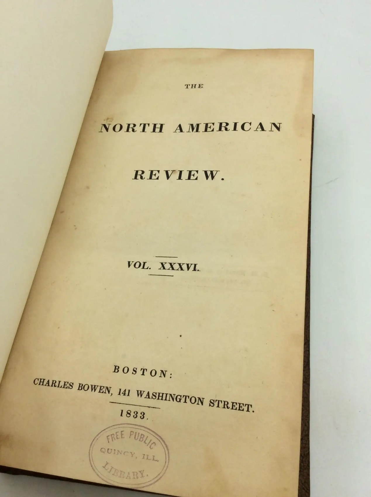

01Поэт, ставший редактором
Уильям Каллен Брайант родился в 1794 году в Массачусетсе. Он получил юридическое образование и практиковал как адвокат, но известность принесли стихи: поэма "Танатопсис", опубликованная в журнале North American Review в 1817 году, считается одним из первых значительных произведений американской романтической поэзии.
В 1825 году Брайант переехал в Нью-Йорк, работал в журналах, а в 1829 году стал редактором и совладельцем газеты New-York Evening Post. Газету основал в 1801 году Александр Гамильтон как орган федералистов. Брайант руководил ею почти пятьдесят лет, до смерти в 1878 году, и сделал её влиятельной либеральной газетой.
02Политическая линия Evening Post
Брайант выступал за свободную торговлю, против монополий и государственных привилегий, за строгие денежные принципы. В 1836 году он высказался в защиту права рабочих объединяться, когда нью-йоркских портных, участвовавших в стачке, осудили за заговор. Эта позиция вызвала сопротивление в кругах, которые считали газету своей аудиторией.
Позднее газета заняла антирабовладельческую позицию, поддержала партию свободной земли и Республиканскую партию. В 1860 году Брайант представил Авраама Линкольна на собрании в Купер-юнион, где будущий президент произнёс речь, сыгравшую роль в его выдвижении. Evening Post оставалась газетой для образованных читателей, но не массовой, и пример Брайанта показывает возможность идейной журналистики в эпоху дешёвой прессы.
03Журналы начала века
Литературная и общественная жизнь страны в первые десятилетия XIX века опиралась на журналы. Port Folio (Филадельфия, с 1801 года) Джозефа Денни стал примером светского литературного издания в федералистском духе. North American Review, основанный в 1815 году в Бостоне, был ориентирован на серьёзную критику и обсуждение национальной культуры. Журнал Godey's Lady's Book (с 1830 года) создал женскую аудиторию и популярный формат с иллюстрациями и модами.
Southern Literary Messenger (Ричмонд, с 1834 года) известен тем, что в 1835 – 1837 годах его редактировал Эдгар По, превратив издание в площадку острой литературной критики. Knickerbocker (Нью-Йорк, 1833) собирал произведения нью-йоркских авторов. Общей чертой была ориентация на образованного читателя и стремление создать национальную литературу, независимую от английской.

04Р. Уолш и реформа прессы
Роберт Уолш (Robert Walsh, 1784–1859; в задании Р. Уэлш) относится к поколению редакторов, создававших американскую культуру серьёзного периодического обзора. Его American Review of History and Politics выходил в 1811–1812 годах. Позднее он редактировал National Gazette и основал American Quarterly Review, выходивший с 1827 года. Пространная рецензия, историческая статья и политическое рассуждение были основой этой издательской программы.
Смысл такой реформы прессы состоял в повышении её интеллектуального уровня и защите американской литературы от снисходительной европейской оценки. Это отличалось от реформы газетного рынка 1830-х годов, связанной с однопенсовой прессой Бенджамина Дея и Джеймса Гордона Беннетта. Уолш менял формат культурного разговора; издатели дешёвых газет прежде всего расширяли рынок и аудиторию.
05Evening Post как идейная газета
New-York Evening Post в руках Брайанта оставалась дорогой для своего времени и ориентировалась на читателей из деловых и образованных кругов. Газета печатала подробные экономические обзоры, литературную критику, статьи по общественным вопросам. Брайант писал редакционные статьи сам и приглашал сотрудников с литературным вкусом, создавая тон спокойной аргументации.
Он поддерживал создание Центрального парка в Нью-Йорке, выступая в 1840-х годах в газете за общественное зелёное пространство для горожан. Эта инициатива показывает, что идейная газета могла участвовать в городской политике, а не только в национальной.
06Журналы и литературная критика
Журнальная культура создавала профессию критика. North American Review и другие ежеквартальные издания публиковали развёрнутые рецензии на английские и американские книги. Критики обсуждали, что значит национальная литература, возможна ли американская поэзия и роман, как соотносятся подражание европейским образцам и поиск собственного языка. В этом споре Брайант, Купер, Ирвинг и позднее По и Эмерсон выступали и как авторы, и как предмет оценки.
Для историка журналистики важно, что журнал в первой половине XIX века был главным коллективным медиа образованного общества. Газета оставалась делом партий и торговли, журнал давал место размышлению и литературе.
Даты и события
- 1794Родился У. К. Брайант
- 1801Основана New-York Evening Post
- 1815Основан North American Review
- 1817Танатопсис в North American Review
- 1829Брайант возглавляет Evening Post
- 1833 – 1835Появление Sun и Herald
- 1834Southern Literary Messenger
- 1860Брайант представляет Линкольна в Купер-юнион
- 1878Смерть Брайанта
Литературный журнал и политическая газета создавали разные формы авторитета. У Брайанта он строился на последовательности редакционной позиции, у Уолша на развёрнутой критике и культурной компетентности. Обе линии продолжали существовать после появления массовой дешёвой прессы.
Источники и материалы для чтения
- Library of Congress. New-York Evening Post и редакторство Брайанта ↗
- Pratte P. Robert Walsh’s American Review: America’s First Quarterly Magazine ↗
- Albert H. Smyth. The Philadelphia Magazines and Their Contributors, 1892 ↗
- IUCAT. American Quarterly Review, 1827–1837 ↗
Книги и научная литература
- Mott F. L. American Journalism: A History of Newspapers in the United States Through 250 Years. New York: Macmillan, 1941.
- Mott F. L. A History of American Magazines. Vols. 1 – 3. Cambridge, MA: Harvard University Press, 1938 – 1957.
- Nevins A. The Evening Post: A Century of Journalism. New York: Boni & Liveright, 1922.
- Brown C. H. William Cullen Bryant. New York: Scribner, 1971.
- Schudson M. Discovering the News: A Social History of American Newspapers. New York: Basic Books, 1978.